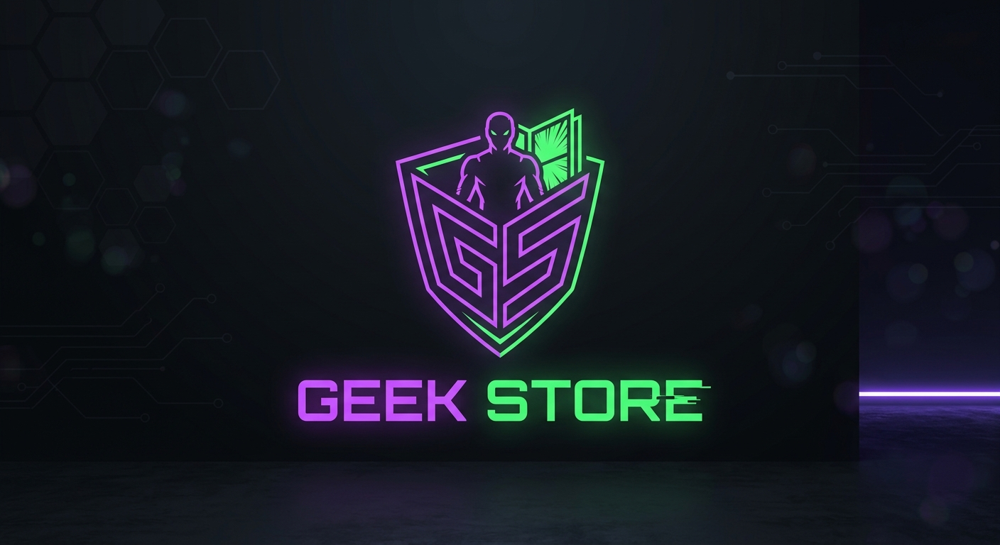
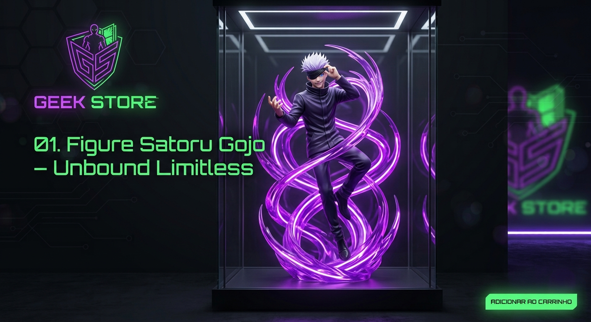
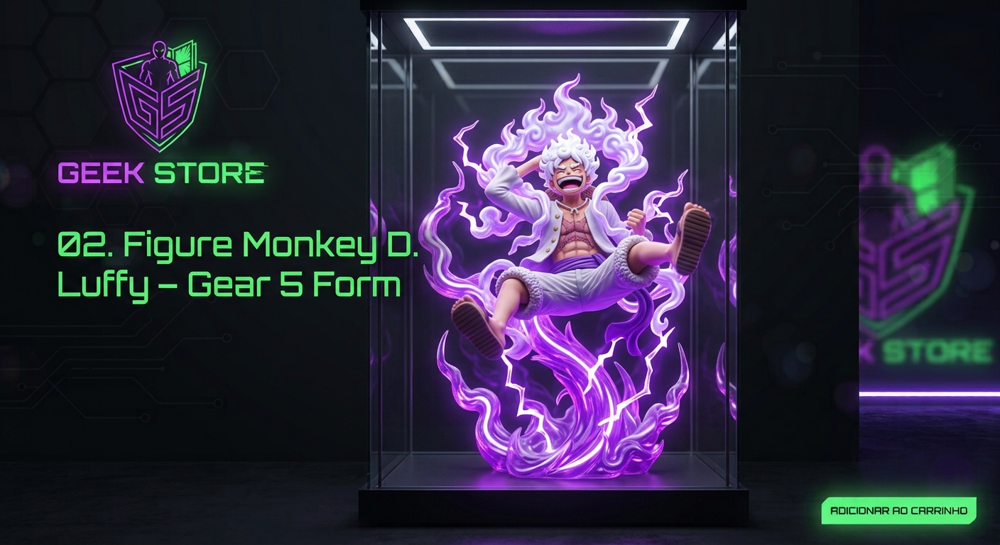
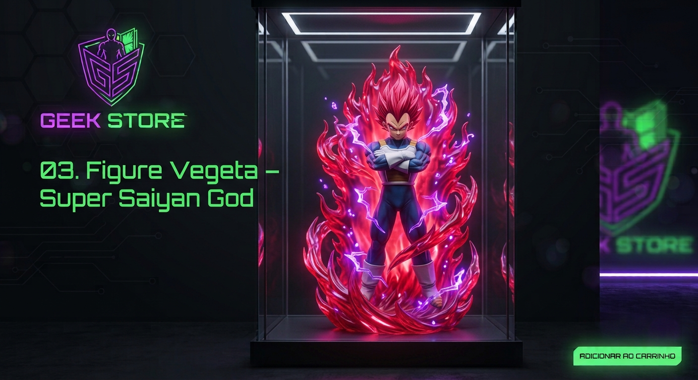
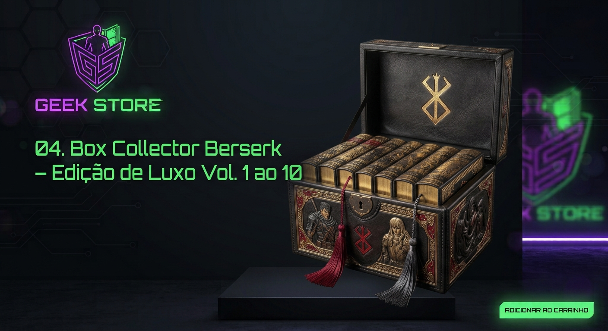
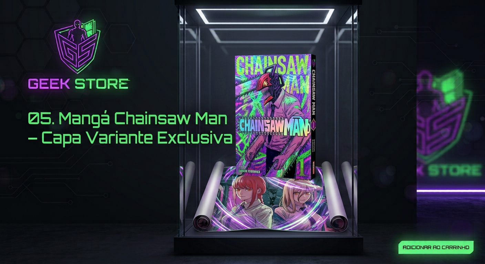
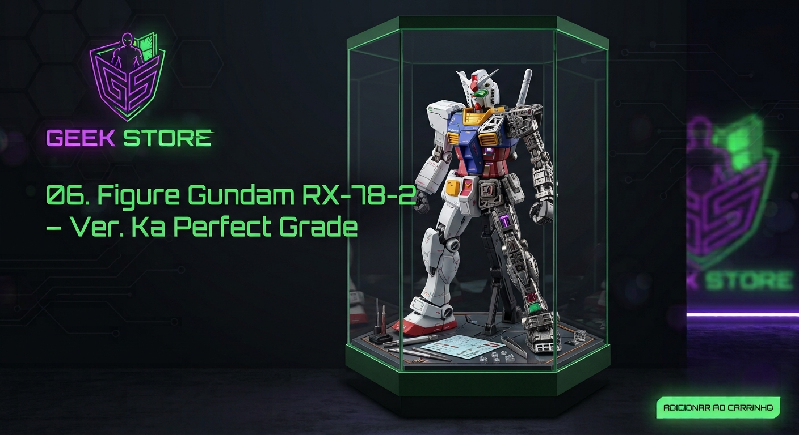
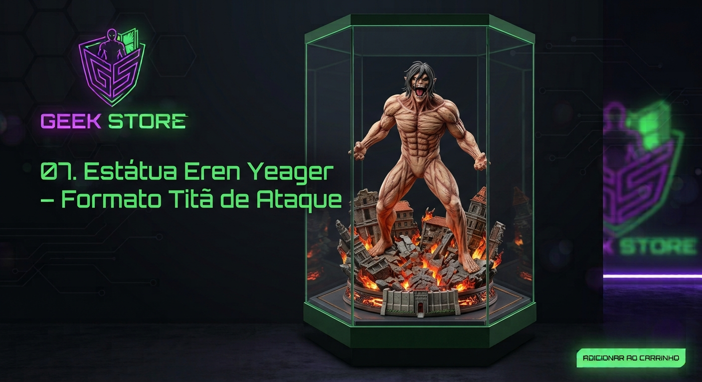
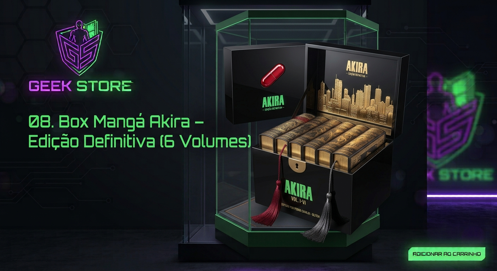
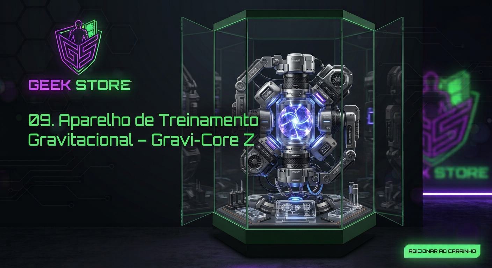

Hero Section
O Epicentro da Cultura Geek
& Otaku High-End.
Action figures de alto padrão, mangás raros e colecionáveis exclusivos com envio seguro e autenticidade garantida.
o universo geek otaku
Hero Section
Action figures de alto padrão, mangás raros e colecionáveis exclusivos com envio seguro e autenticidade garantida.


Estátua premium em escala 1/4 capturando Gojo no ápice do seu poder, cercado pela aura translúcida roxa da técnica ilimitada. Pintura especial com iluminação UV e base temática refinada.

Figura colecionável de alta fidelidade retratando a transformação libertadora do Gear 5. Efeitos de fumaça espiritual em resina semitransparente, detalhes em tom de roxo vibrante e base reforçada para exibição de luxo.

Peça exclusiva do Príncipe dos Saiyajins envolto na aura divina avermelhada/arroxeada. Escultura com acabamento impecável na musculatura e efeitos de energia incandescentes para destaque absoluto na vitrine.

Baú de colecionador em acabamento de couro sintético e detalhes em relevo dourado. Acompanha os 10 primeiros volumes da obra em capa dura com acabamento artesanal e pingentes decorativos exclusivos.

Edição especial com tiragem limitada trazendo sobrecapa com efeitos holográficos neon. Inclui pôster interno de colecionador e acabamento gráfico diferenciado de alta gramatura.

Kit de modelismo premium articulado em escala detalhada. Possui estrutura interna com peças mecânicas expostas, decais aplicados à água e iluminação LED acoplada no cockpit e visores.

Estátua monumental sobre base diorama rica em detalhes da muralha e escombros em chamas. Escultura anatômica realista que capta toda a ferocidade e imponência do Titã de Ataque.

Caixa acrílica estilizada inspirada no visual cyberpunk de Neo-Tokyo. Contém a coleção completa de 6 volumes em formato gigante com sobrecapa em acabamento fosco e verniz localizado.

Réplica tecnológica colecionável da cápsula de gravidade com núcleo elétrico expansivo. Possui efeitos de iluminação em LED roxo e azul acionados por sensor ao toque.